Home
本文主要是转载，记录学习matlab做的各个实验。
参考链接：
Matlab图像处理 - 吃小羊 - 知乎
目录如下：
吃小羊：MATLAB图像处理：01：基本图像导入，处理和导出 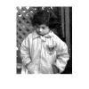
吃小羊：MATLAB图像处理：02：检测和测量图像中的圆形物体 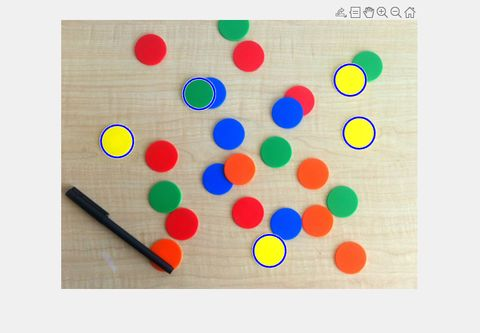
吃小羊：MATLAB图像处理：03：纠正照明不均匀并分析前景对象 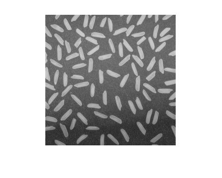
吃小羊：MATLAB图像处理：04：在多光谱图像中寻找植被 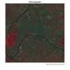
吃小羊：MATLAB图像处理：05：显示高动态范围图像 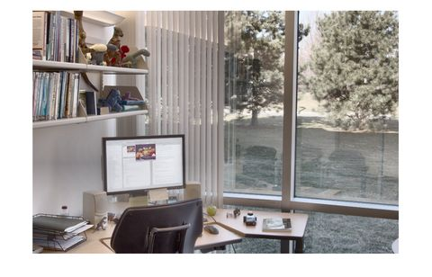
吃小羊：MATLAB图像处理：06：显示RGB图像的单独色彩通道 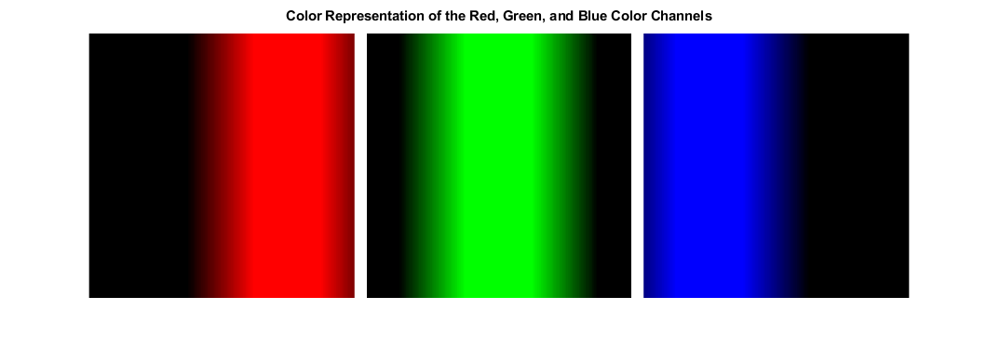
吃小羊：MATLAB图像处理：07：对图像序列执行操作 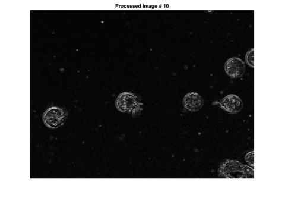
吃小羊：MATLAB图像处理：08：在交通视频中检测汽车 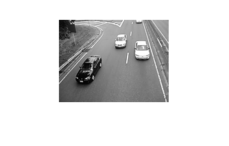
吃小羊：MATLAB图像处理：09：在RGB和HSV颜色空间之间转换 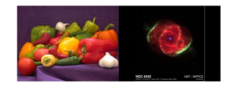
吃小羊：MATLAB图像处理：10：确定L * a* b* 值是否在RGB色域中 
吃小羊：MATLAB图像处理：11：计算测试图上CIE94颜色的色差 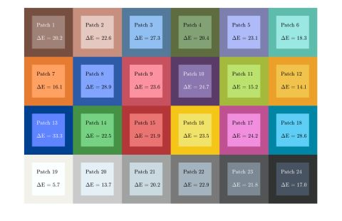
吃小羊：MATLAB图像处理：12：自动白平衡算法的比较 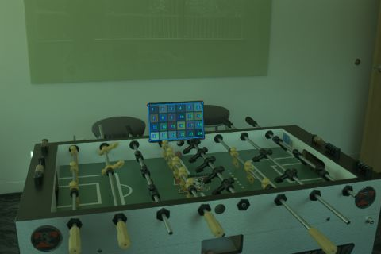
吃小羊：MATLAB图像处理：13：执行简单的二维平移变换 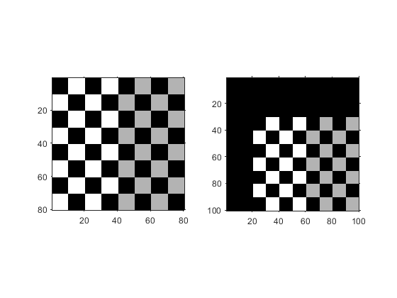
吃小羊：MATLAB图像处理：14：从投影数据重建图像 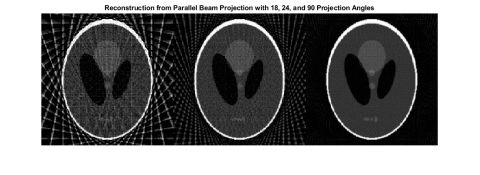
吃小羊：MATLAB图像处理：15：减少图像梯度中的噪点 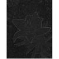
吃小羊：MATLAB图像处理：16：将色标添加到显示的灰度图像 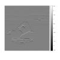
吃小羊：MATLAB图像处理：17：查看文件夹或数据存储区中图像的缩略图 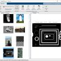
吃小羊：MATLAB图像处理：18：获取目标图像句柄 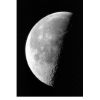
吃小羊：MATLAB图像处理：19：创建像素区域工具 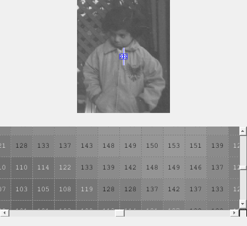
吃小羊：MATLAB图像处理：20：生成显示像素信息的应用 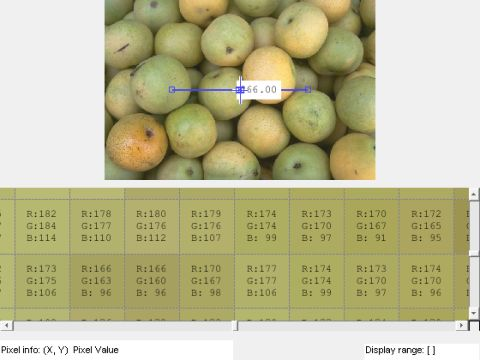
吃小羊：MATLAB图像处理：21：构建用于浏览大图像的应用 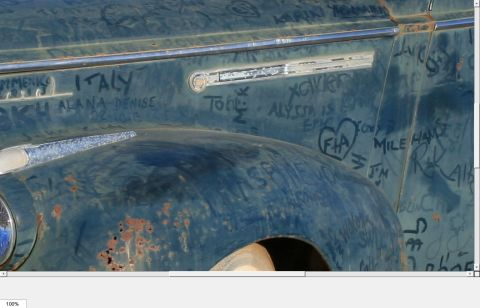
吃小羊：MATLAB图像处理：22：构建图像比较工具 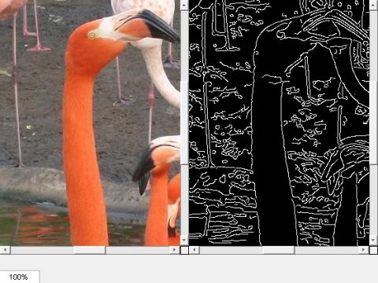
吃小羊：MATLAB图像处理：23：使用缩放函数调整图像大小 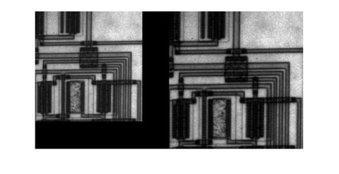
吃小羊：MATLAB图像处理：24：使用空间参考配准两个图像以增强显示 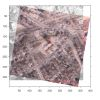
吃小羊：MATLAB图像处理：25：使用相位相关作为配准中的预处理 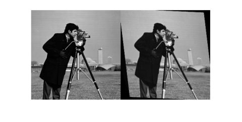
吃小羊：MATLAB图像处理：26：图像旋转 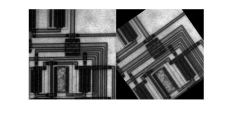
吃小羊：MATLAB图像处理：27：使用imtranslate函数平移图像 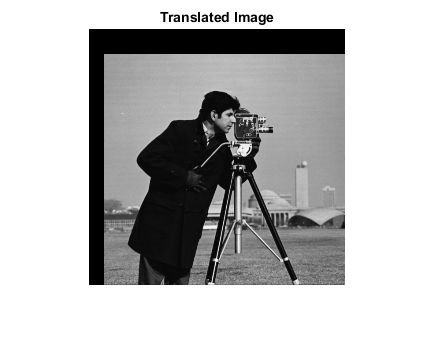
吃小羊：MATLAB图像处理：28：创建变换图像库 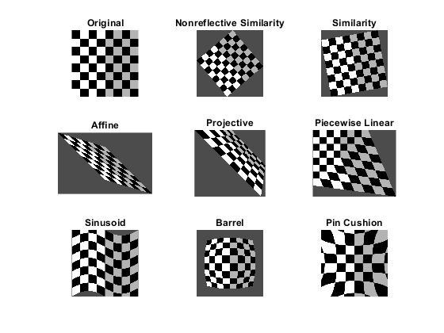
吃小羊：MATLAB图像处理：29：在几何变换输出中指定填充值 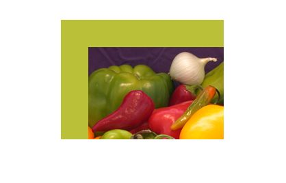
吃小羊：MATLAB图像处理：30：移动显示图像的X和Y坐标范围 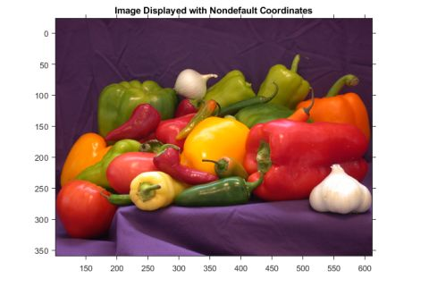
吃小羊：MATLAB图像处理：31：查找图像旋转和缩放 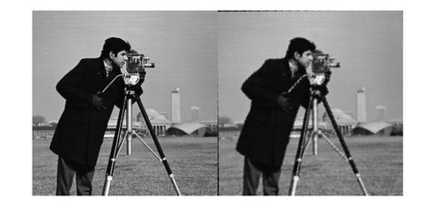
吃小羊：MATLAB图像处理：32：配准MRI多模图像 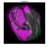
吃小羊：MATLAB图像处理：33：多模式3-D医学图像配准 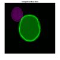
吃小羊：MATLAB图像处理：34：使用控制点配准具有投影失真的图像 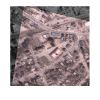
吃小羊：MATLAB图像处理：35：使用配准估算器应用配准图像 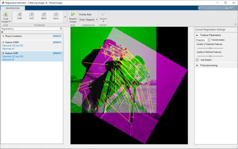
吃小羊：MATLAB图像处理：36：使用归一化互相关配准图像 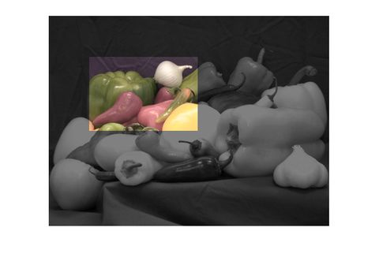
吃小羊：MATLAB图像处理：37：对比度增强技术 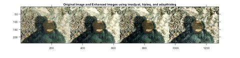
吃小羊：MATLAB图像处理：38：弱光图像增强 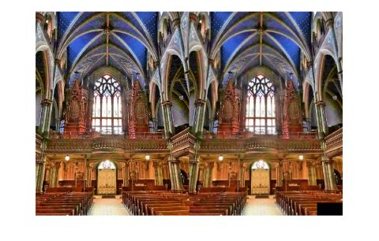
吃小羊：MATLAB图像处理：39：向外增加径向过滤器强度 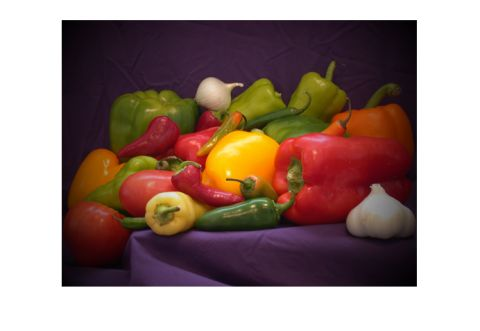
吃小羊：MATLAB图像处理：40：使用图像区域分析器应用在属性上过滤图像 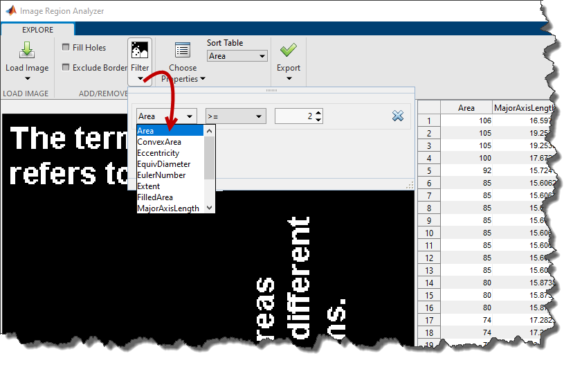
吃小羊：MATLAB图像处理：41：使用imfilter功能滤波灰度和真彩（RGB）图像 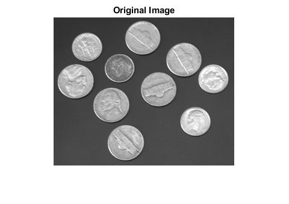
吃小羊：MATLAB图像处理：42：使用预定义滤波器过滤图像 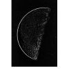
吃小羊：MATLAB图像处理：43：用高斯平滑滤波器处理图像 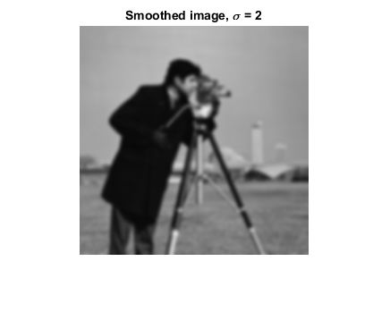
吃小羊：MATLAB图像处理：44：使用引导滤波器执行闪光灯/无闪光灯降噪 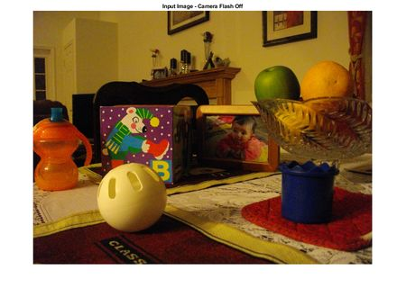
吃小羊：MATLAB图像处理：45：保留边缘滤波后分割热成像图像 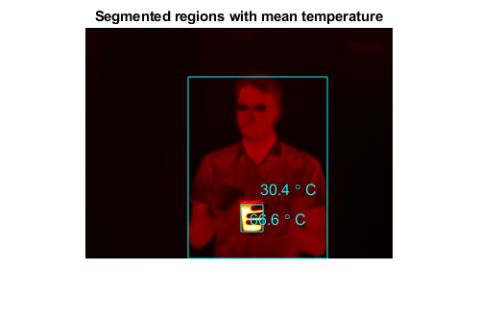
吃小羊：MATLAB图像处理：46：对积分图像应用多重滤波器 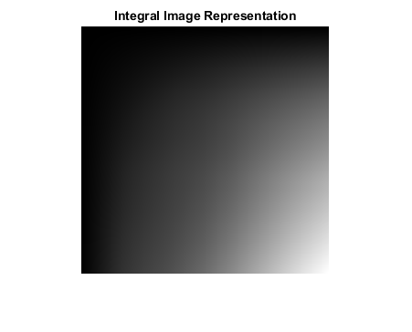
吃小羊：MATLAB图像处理：47：多光谱彩色合成图像增强 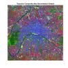
吃小羊：MATLAB图像处理：48：将图像强度值调整到指定范围 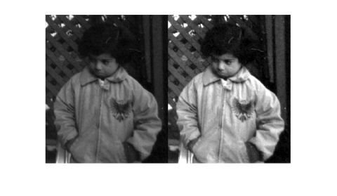
吃小羊：MATLAB图像处理：49：使用边缘检测和形态学检测细胞 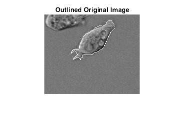
吃小羊：MATLAB图像处理：50：标记控制的分水岭分割 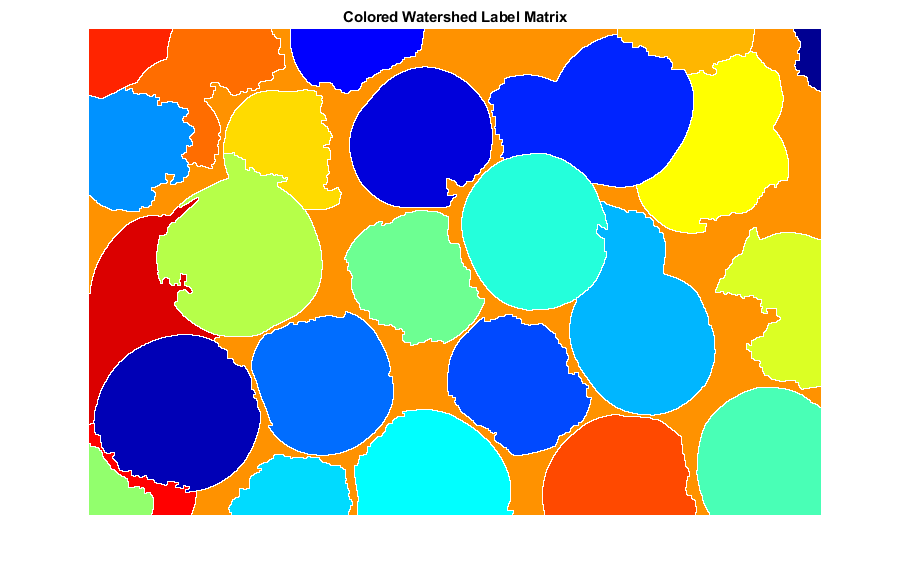
吃小羊：MATLAB图像处理：51：雪花的粒度分析 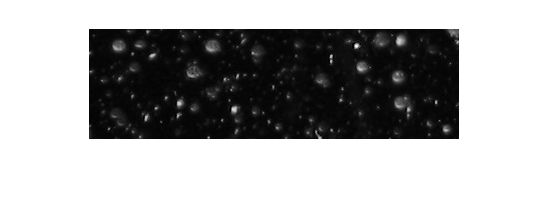
吃小羊：MATLAB图像处理：52：膨胀图像以放大形状
吃小羊：MATLAB图像处理：53：使用腐蚀去除细线
吃小羊：MATLAB图像处理：54：使用形态学开操作提取大图像的特征 
吃小羊：MATLAB图像处理：55：使用 Wiener 滤波器对图像进行去模糊
吃小羊：MATLAB图像处理：56：使用正则过滤器对图像进行去模糊
吃小羊：MATLAB图像处理：57：使用Lucy-Richardson算法对图像进行去模糊
吃小羊：MATLAB图像处理：58：使用盲反卷积算法对图像进行去模糊
吃小羊：MATLAB图像处理：59：使用手绘ROI细化分割蒙版
吃小羊：MATLAB图像处理：60：使用ROI创建图像比较工具
吃小羊：MATLAB图像处理：61：使用 ROI 创建图像比较工具
吃小羊：MATLAB图像处理：62：使用示例匹配的交互式图像修复
吃小羊：MATLAB图像处理：63：锐化图像中的感兴趣区域
吃小羊：MATLAB图像处理：64：将自定义过滤器应用于图像中的感兴趣区域
吃小羊：MATLAB图像处理：65：对手绘 ROI 进行降采样或简化
吃小羊：MATLAB图像处理：66：使用矩形 ROI 交互式旋转图像
吃小羊：MATLAB图像处理：67：使用折线创建角度测量工具
吃小羊：MATLAB图像处理：68：测量图像中的距离
吃小羊：MATLAB图像处理：69：绘制ROI后使用Wait函数
吃小羊：MATLAB图像处理：70：块处理大图像
吃小羊：MATLAB图像处理：71：计算大图像的统计数据
吃小羊：MATLAB图像处理：72：使用 Lab 颜色空间的基于颜色的分割
吃小羊：MATLAB图像处理：73：使用 K 均值聚类的基于颜色的分割
吃小羊：MATLAB图像处理：74：测量灰度图像中的区域 
吃小羊：MATLAB图像处理：75：在交通视频中检测汽车
吃小羊：MATLAB图像处理：76：在图像分割器中使用Graph Cut分割图像
吃小羊：MATLAB图像处理：77：使用颜色阈值器应用程序分割图像和创建蒙版
吃小羊：MATLAB图像处理：78：使用 Gabor 过滤器的纹理分割
吃小羊：MATLAB图像处理：79：使用纹理过滤器的纹理分割
吃小羊：MATLAB图像处理：80：在图像分割器中使用阈值分割图像
吃小羊：MATLAB图像处理：81：使用图像分割器绘制区域来分割图像
吃小羊：MATLAB图像处理：82：在图像分割器中使用活动轮廓分割图像
吃小羊：MATLAB图像处理：83：在 Image Segmenter 中使用 Local Graph Cut (Grabcut) 分割图像
吃小羊：MATLAB图像处理：84：使用图像分割器中的查找圆圈分割图像
吃小羊：MATLAB图像处理：85：在图像分割器中使用自动聚类分割图像
吃小羊：MATLAB图像处理：86：在图像分割器中使用形态学细化分割
吃小羊：MATLAB图像处理：87：在Color Thresholder应用程序中使用点云进行图像分割
吃小羊：MATLAB图像处理：88：用颜色特征和超像素绘制地块分类
吃小羊：MATLAB图像处理：89：从 3-D 胸部扫描中分割肺
吃小羊：MATLAB图像处理：90：使用 Volume Segmenter 创建二进制蒙版
吃小羊：MATLAB图像处理：91：使用 Volume Segmenter 创建语义分割
吃小羊：MATLAB图像处理：92：使用 Volume Segmenter 处理被阻止的图像
吃小羊：MATLAB图像处理：93：识别圆形物体
吃小羊：MATLAB图像处理：94：测量交角
吃小羊：MATLAB图像处理：95：测量一卷胶带的半径
吃小羊：MATLAB图像处理：96：使用 Radon 变换检测线条
吃小羊：MATLAB图像处理：97：求运动中钟摆的长度
吃小羊：MATLAB图像处理：98：使用图像区域分析器计算图像区域的属性
吃小羊：MATLAB图像处理：99：创建图像直方图 
吃小羊：MATLAB图像处理：100：从GLCM和绘图相关性导出统计数据
吃小羊：MATLAB图像处理：101：比较无参考图像质量指标
吃小羊：MATLAB图像处理：102：使用神经图像评估量化图像质量
吃小羊：MATLAB图像处理：103：使用颜色校正矩阵校正颜色
吃小羊：MATLAB图像处理：104：获得局部结构相似指数
吃小羊：MATLAB图像处理：105：比较不同压缩级别的图像质量
吃小羊：MATLAB图像处理：106：评估 eSFR 测试图表上的质量指标
吃小羊：MATLAB图像处理：107：使用 UNIT 进行无监督的 Day-to-Dusk 图像变换
吃小羊：MATLAB图像处理：108：使用深度学习的单幅超分辨率图像